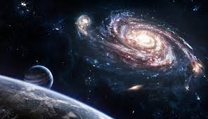

Tributo a The Beatles
La orquesta Fiarmónica de Medellin celebrará la carrera musical de la agrupacion británica The Beatles, quieenes marcaron la historia del rock durante la decada de los 60s y 70s. durante esta velada la Orquesta estará acompañada por CLaudio Gomez(voz y guitarra) y Julian Cardona(guitarra), bajo la direccion de Gonzalo
Navegacion por los planetas
EL Planetario de Medellin invita el 23 de diciembre a las 6:30 a un espectaculo de muscia y astronomía
La astronomía (del latín astronomĭa, y este del griego ἀστρονομία)1 es la ciencia que se ocupa del estudio de los cuerpos celestes del universo, incluidos los planetas y sus satélites, los cometas y meteoroides, las estrellas y la materia interestelar, los sistemas de materia oscura, gas y polvo llamados galaxias y los cúmulos de galaxias; por lo que estudia sus movimientos y los fenómenos ligados a ellos. La astronomía también abarca el estudio de la formación y el desarrollo del Universo en su conjunto mediante la cosmología, y se relaciona con la física mediante la astrofísica y la química mediante la astroquímica.